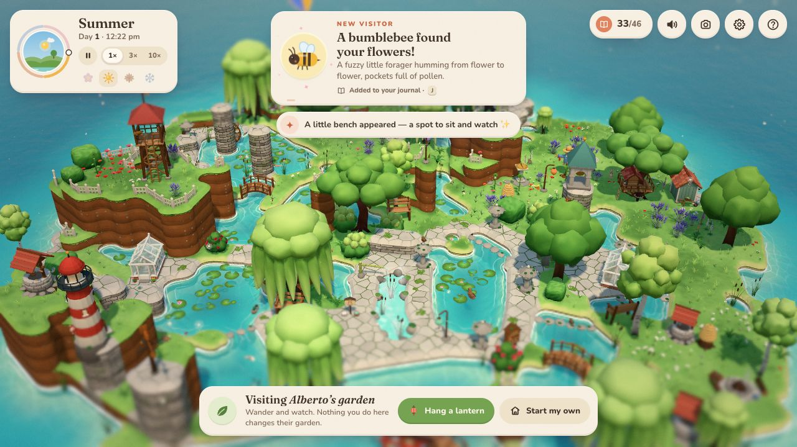
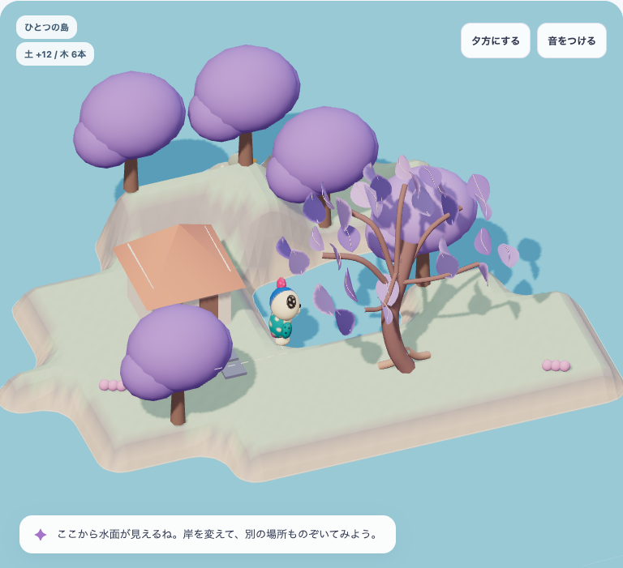
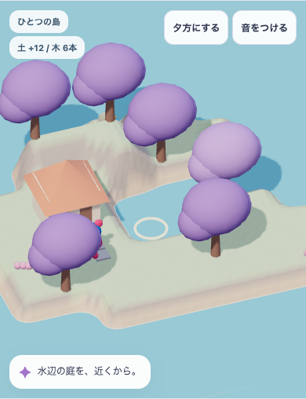
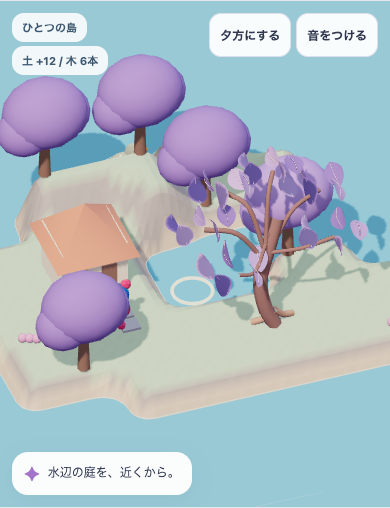
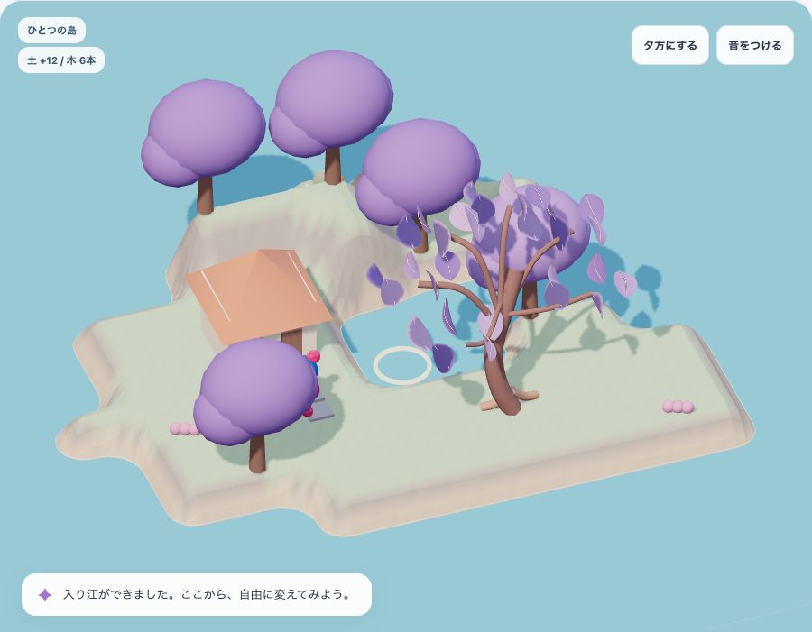
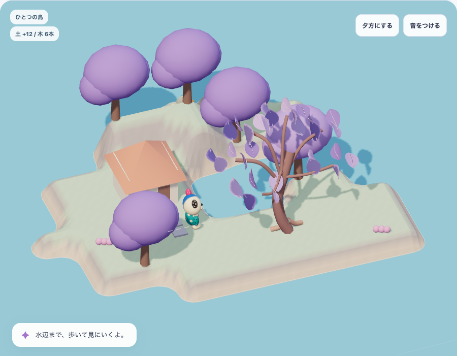
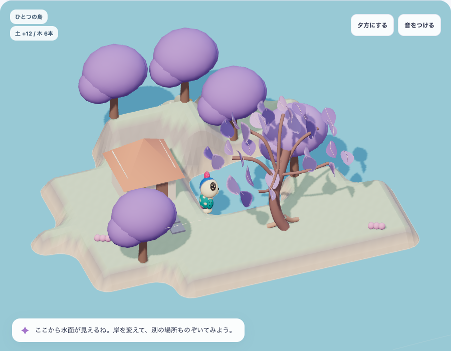
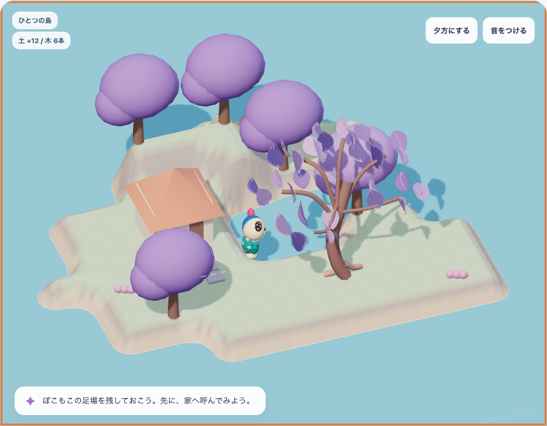

一角で、目標へ届く
作り方を確かめる。
木・岸・家・水面・ぽこもこを、ひとつの景色として成立させる。その前に、完成方向・参考ゲーム・現在の実装を同じ資料で確認します。
まず、3種類の証拠を見比べる

大樹・回廊・水路と集落
大小、密度と余白、建築と植生のつながり。静止画から操作や動きの品質は判定しません。

形を変える箱庭の実例
岸・土の層・水際・植生・建築の素材差。多数の物がある成熟庭です。撮影条件と出典

家1軒・木6本の入り江
編集と歩行をつないだ版。ほかの木と家は粗形のままです。749d7591c1a6dde6A/B/Cは同じ物量・尺度・画角・光ではありません。物の数や画面の明るさだけで優劣を決めず、造形と空間の組立てを比較します。画像は未加工で、表示サイズだけ調整しています。クリックで原寸を開けます。
390幅：同じ条件で木1本を変えると




静止画だけで動きを評価しない
見てほしい流れ
- 盛る・掘る操作列から入り江になる。
- 呼んだぽこもこが乾いた地面を歩き、水面をのぞく。
- 足元の編集は保護され、理由が出る。
- Undoで形と姿勢を戻し、家前へ呼ぶ。
映像で見えることと、コード・自動検査で確かめたことを分けます。実機、手で操作した気持ちよさ、音質、子どもの理解は未確認です。
最も先に検討したい制作方法
採用native-05には、すでに家と樹木の原本kitと読込コードがあります。粗形を少しずつ作り込む方法と、原本kitを編集可能な一角へ使う方法を比較し、最短で魅力を保持できる方を選びます。
新しい生成器や全島の作り直しに広げず、必要な部品・尺度・支持床と経路への接続を特定してください。








次の一角で、何を判断するか
| 対象 | 見える到達点 | 進めない場合 |
|---|---|---|
| 一角の全景 | 家と木の大小、岸と水面の空きがまとまり、木6本でも見たい場所がある。 | 小物や物量を増やす前に、配置・大きな形・光へ戻る。 |
| 近景の美術 | 木陰の厚みと抜け、幹・葉・土・岩・水の素材差、足元の接地が読める。 | 原本kitの利用、造形・材質の作り方を選び直す。 |
| 編集後の景色 | 2〜3通りの岸の形でも破綻せず、本人の配置と見通しが変わる。 | 完成した決め絵へ自動整列せず、変形と接続の規則を直す。 |
| 触った反応 | 変更した位置と結果、ぽこもこの視線・重心・行先がつながる。音offでも分かる。 | 同じ演出の繰り返しを増やさず、地形と実利用の関係へ戻る。 |
アストラに渡す依頼の要点
この資料の画像・動画とREADMEを読み、まず独立した美術所見を出してください。その後、既存native05-owned-kitを最優先で検討し、「推奨する制作方法／使う資産と変更箇所／家1軒・木6本の一角の構成／最少の動作／全景と近景の受入条件／不明点」を具体化してください。
今回はレビュー用資料です。アストラの回答を受け取った記録や、追加実装・本体採用の合格ではありません。モデルや会話へ資料を自動送信していません。
前提・制約・コードと資産の入口をすべて読む